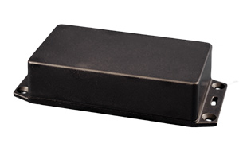

Project template containing the recommended board layout for Hammond Manufacturing 1591XXD:
Translucent - Blue: 1591XXDTBU - HM1055-ND
Black: 1591XXDSFLBK - HM2035-ND
Black: 1591XXDSBK - HM2034-ND
Gray: 1591XXDGY - HM1045-ND
Gray: 1591XXDFLGY - HM2033-ND
Black: 1591XXDFLBK - HM2032-ND
Black: 1591XXDBK - HM1044-ND
|
|
 |
The "Dwgs.User" layer contains all critical dimmensions in milimeters[inches].
The "Edge.Cuts" layer contains the maximum board outline and holes to align with board standoffs.
PCB Preview: